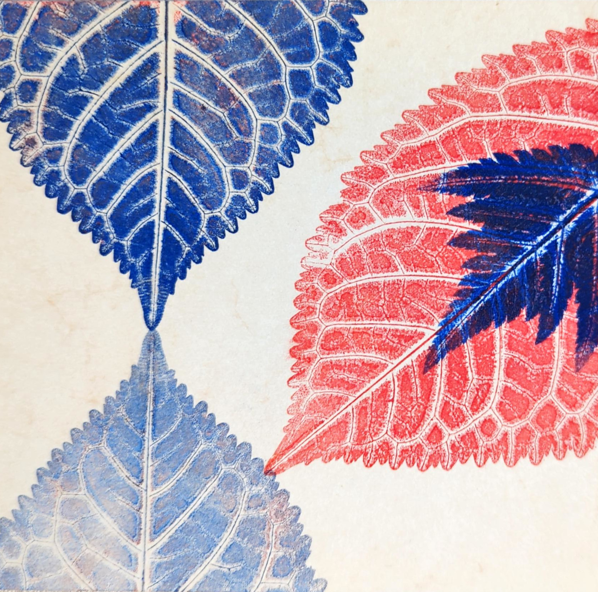
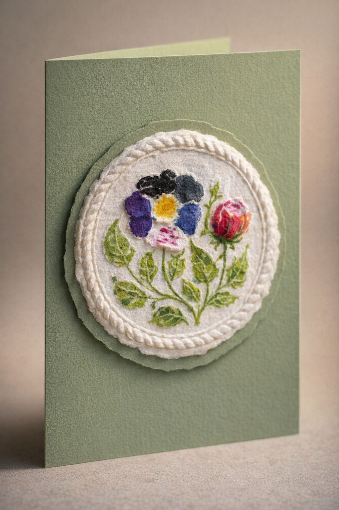

Kreative Workshops
Wollen Sie Ihre Gruppe mit einem interessanten Programmangebot überraschen, jemandem zum Geburtstag etwas Besonderes schenken oder sich selbst einmal etwas Interessantes gönnen? Sie planen ein Familienfest und suchen eine Idee, die alle Generationen faszinieren kann?
Lassen Sie sich auf für Sie neue Techniken ein und genießen Sie kreatives Schaffen alleine oder in angenehmer Gesellschaft.
Naturselbstdruck

Vorsicht — dieses Druckverfahren hat ein hohes „Suchtpotential“! Wir drucken Blätter, Blüten, wenn Sie wollen auch Fische und Sie erfahren Interessantes über diese historische Technik, die seit Jahrhunderten nichts von ihrer Faszination eingebüßt hat.
Origami
Nach japanischer Tradition.
Aus einem Blatt Papier etwas Neues entstehen lassen — ein Tier, eine Blüte oder ein kleines Spielzeug. Einen Faltbrief für die Übermittlung einer Herzensangelegenheit herstellen oder kunstvolle Schachteln aus mehreren Modulen entwickeln — lassen Sie sich auf Origami ein und tauchen in die Welt des japanischen Papierfaltens ein.
Papierspringerle

Sie kennen sicher Springerle als traditionelles Gebäck vor allem zur Weihnachtszeit. Aber Papierspringerle? Aus Papierpulpe und Modeln entstehen handgeschöpfte Motive, die sich für reizvolle Glückwunschkarten oder andere Dekorationen bestens eignen. Dabei setzen Sie sich auch mit den Motivwelt klassischer Springerle auseinander.
Fröbelsterne
Weihnachten kommt meist überraschend schnell und Sie bewundern schon lange Fröbelsterne. Doch bisher scheiterten Sie an komplizierten Anleitungen und dem Umgehen mit den dafür benötigten Papierstreifen? Lernen Sie diese historische und kulturgeschichtlich interessante Form der Advents- und Weihnachtsschmucks sowie die Biografie ihres „Erfinders“ kennen.